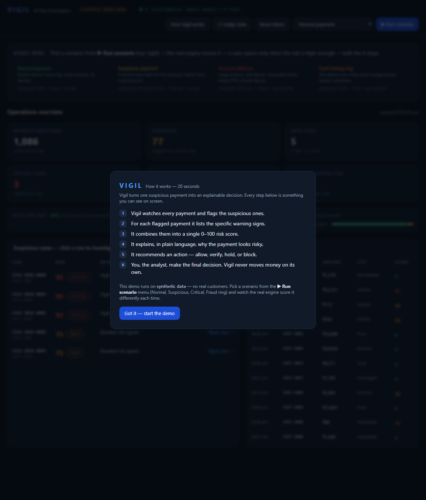
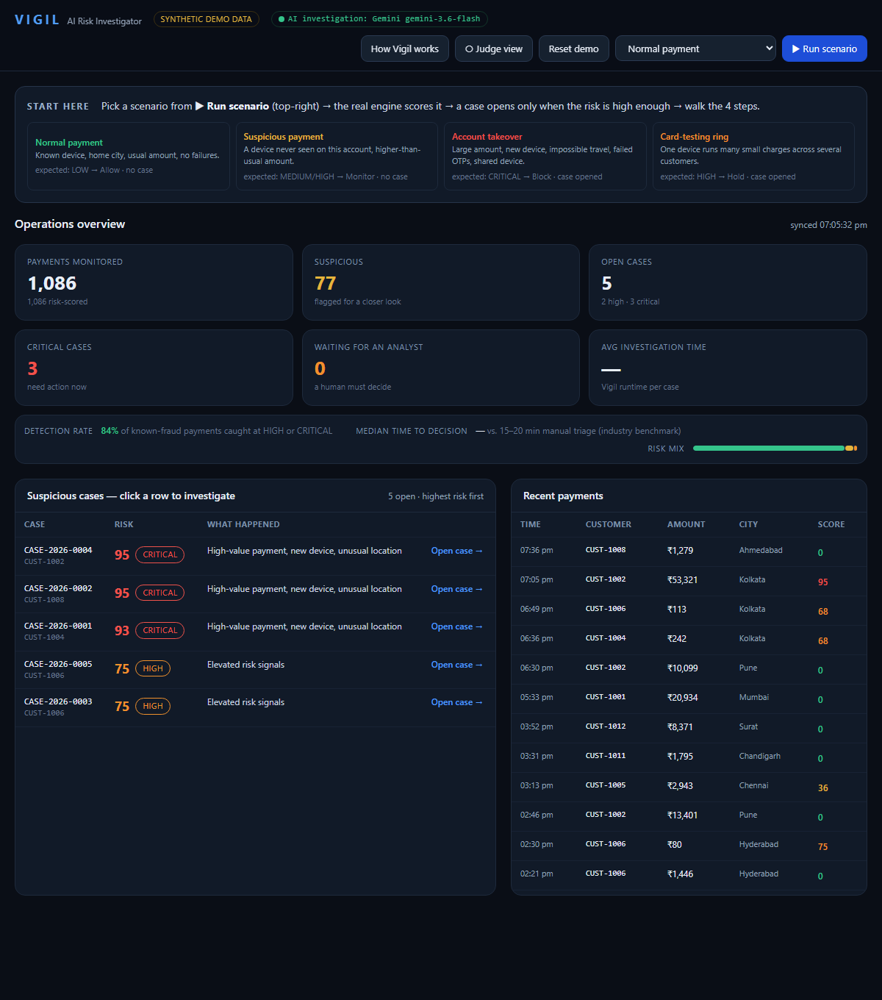
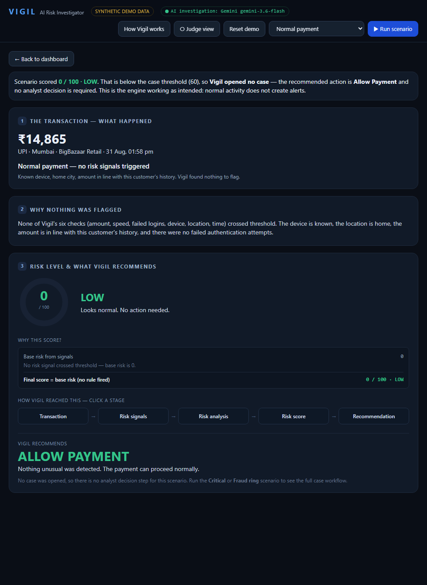
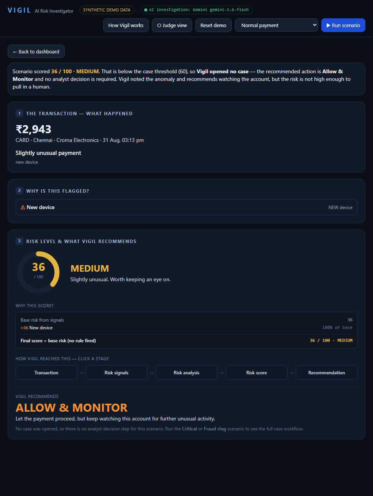
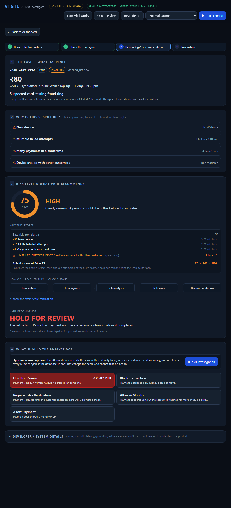
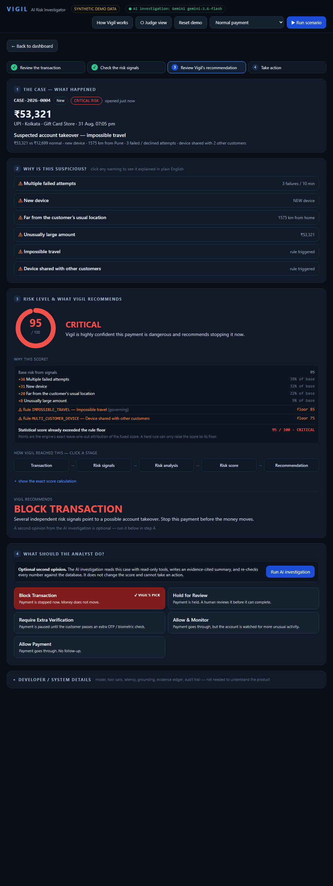
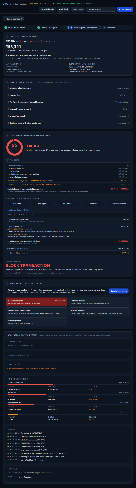

Everything below matches the running application and its code. Figures are from the deterministic synthetic demo data. Nothing here describes a capability the code does not have.
Vigil is a hybrid: a deterministic statistical-plus-rules risk engine, an LLM-assisted investigation layer, and a human decision log with an append-only audit trail.
| Layer | Owns | How |
|---|---|---|
| Risk engine | the 0–100 score and the recommended action | 6 signal detectors → grouped noisy-OR fusion → leave-one-out attribution → 3 hard rules that impose score floors → a fixed action policy. Hand-set weights. Deterministic. |
| AI investigation | the narrative, findings and a second opinion | Gemini gemini-3.6-flash agentic loop over 5 read-only tools, or a deterministic engine-only fallback. Every number it states is re-checked against the database. |
| Human analyst | the decision | Allow / Monitor / Step-up / Hold / Block, with a mandatory written reason on any override, recorded in the audit trail. |
It is NOT:
numpy is used only for median / percentile / MAD. The score is arithmetic over constants.Decision row and change the case status; Transaction.status never changes and no money is actually stopped.A fraud analyst faces a queue of flagged payments and must decide, in seconds each, whether to let one through or stop it. The evidence is scattered across transaction history, device graphs and auth logs. Vigil does that assembly up front and hands over a decision-ready case: the specific warning signs, a score with a transparent breakdown, a recommended action, and — when available — an independent AI second opinion with every figure verified. The analyst still decides; Vigil makes the decision fast and auditable.
A case is opened automatically only when the score reaches 60. Lower-risk scenarios still produce a full score and recommendation — they just don't create an alert.


All four are produced by the same real engine. Nothing is hard-coded for presentation. Each is a scripted template with randomised numbers inside fixed ranges, so the exact figures vary slightly per run but the outcome band does not.
| Scenario | What it builds | Engine result (typical) |
|---|---|---|
| Normal payment | CUST-1001, known device, home city (Mumbai), active hour, amount ≈ median. No failures, no sharing, no travel. | 0–5 / 100 · LOW → Allow. No case. 0 signals triggered. |
| Suspicious payment | CUST-1005, a device never seen on the account, amount ≈ 2.4× median (kept below p95). Nothing else. | ~36 / 100 · MEDIUM → Monitor. No case. One signal: new device (100% of base). |
| Account takeover | CUST-1002. A real home-city payment 35 min earlier, then: far city (~1,500 km), new device, proxy IP, 3 failed OTPs, 2 ring transactions on the same device, amount ≈ 3.7× median. | 94–97 / 100 · CRITICAL → Block. Case opened. Signals: failed attempts, new device, far location, large amount; rules R_IMPOSSIBLE_TRAVEL + R_MULTI_CUSTOMER_DEVICE fire. |
| Card-testing ring | CUST-1006. One device runs ~8 small charges across 4 customers over ~1 hour, plus 1 decline. Focus payment is tiny (~₹100), home city. | 75 / 100 · HIGH → Hold for review. Case opened. Statistical base ≈ 50 (MEDIUM); the rule R_MULTI_CUSTOMER_DEVICE (floor 75) lifts it to HIGH — a visible rule bump. |




normalized severity in 0–1 and has a
fixed weight. Its contribution is weight × normalized.p = 1 − Π(1 − contribution).
base_score = round(100 × p). This bounds the score to 0–100 without clipping and stops
"new device + new city" counting twice.max(base_score, governing floor), clamped 0–100. A rule can only
raise the score to its floor, never lower it.The UI's "Why this score?" panel is built entirely from these numbers:
MULTI_CUSTOMER_DEVICE — floor 75 (governing)IMPOSSIBLE_TRAVEL — floor 85 (governing) · ⚠ Rule MULTI_CUSTOMER_DEVICE — floor 75The "points" are the engine's exact leave-one-out attribution of the fused score multiplied by the base. They are an honest decomposition, not additive weights invented for the slide. Same DB state → same numbers, every time.
| Signal (code) | Weight | Fires when… | Judge-facing name |
|---|---|---|---|
AMT_DEV | 0.80 | the amount is far above this customer's own median (robust z-score) | Unusually large amount |
VEL_1H | 0.70 | many more payments in the past hour than this customer's normal rate | Many payments in a short time |
AUTH_FAIL | 0.85 | failed OTP / password / CVV / decline events in the 10 min before the payment | Multiple failed attempts |
DEV_NEW | 0.60 | the device has never been seen on this account (severity doubles if the amount is also above p95) | New device |
GEO_DIST | 0.50 | the payment is far outside the customer's usual radius (weak on its own — needs corroboration) | Far from the customer's usual location |
TIME_ODD | 0.35 | the payment is outside the customer's normal active hours | Unusual time of day |
| Rule | Floor | Fires when… |
|---|---|---|
R_IMPOSSIBLE_TRAVEL | 85 | a prior payment ≤ 3 h earlier is ≥ 300 km away, implying a speed > 900 km/h |
R_MULTI_CUSTOMER_DEVICE | 75 | the same device was used by ≥ 2 other customers in the last 24 h |
R_AUTH_STORM | 65 | ≥ 3 failed OTP/password/CVV attempts in the 5 min before a successful payment |
R_IMPOSSIBLE_TRAVEL and R_MULTI_CUSTOMER_DEVICE are "hard" — at CRITICAL they force the recommended action to Block.
| Button | Where | What it does |
|---|---|---|
| ▶ Run scenario + menu | Header | Builds the chosen scenario now via the real engine, then routes you to its case (or its transaction-result page if no case). |
| Scenario cards | Dashboard | One-click shortcut for the same four scenarios. |
| Reset demo | Header | Wipes and re-seeds the database deterministically. Safe any time. |
| How Vigil works | Header | Re-opens the 6-point intro card. |
| ○ Judge view / ● Full detail | Header | Toggles every technical panel on the case screen on/off. |
| Open case → | Queue row | Opens that case (clicking the row works too). |
| Run AI investigation | Case · step 4 | Runs the agent (Gemini, or engine-only fallback). Optional. ~1–3 min on the live model. |
| Block Transaction / Hold for Review / Require Extra Verification / Allow & Monitor / Allow Payment | Case · step 4 | Selects an analyst action. Vigil's recommended one is highlighted and tagged Vigil's pick. |
| Confirm decision & close case | Case · step 4 | Writes the decision + reason to the audit trail and marks the case resolved. |
Deep links: #case/CASE-2026-0004, #txn/<id>; ?guide=0 skips the intro; ?tech=1 starts in Full detail.
POST /api/simulate/scenario → inject_scenario() builds
transactions + auth events, scores them with the engine, opens a case iff score ≥ 60. All rows persisted to SQLite.POST /api/cases/<id>/investigate → creates an
AgentRun; Gemini tool-loop (or fallback); writes an evidence ledger, then findings with
VERIFIED / UNVERIFIED / REFUTED tags after the grounding check; case status → REVIEW_REQUIRED.POST /api/cases/<id>/decision →
apply_decision() inserts a Decision row, sets Case.status
(BLOCK/HOLD_FOR_REVIEW → BLOCKED; the other three → APPROVED),
sets closed_at, and appends an analyst_decision audit entry. If the action
differs from the engine's recommendation and no reason is given → HTTP 422.Transaction.status never changes and nothing is actually blocked
or held. Vigil is decision support and an audit record, not an enforcement point.Owns the score and the binding recommended action. Pure, deterministic arithmetic — 6 weighted signal detectors, grouped noisy-OR fusion, leave-one-out attribution, 3 rule floors, a fixed policy matrix. No ML, no randomness at scoring time, fully reproducible. Runs in single-digit milliseconds. The AI cannot change any of it.
Runs only when the analyst clicks Run AI investigation. Model:
gemini-3.6-flash, driven through an agentic loop over 5 read-only tools
(risk assessment, customer profile, transaction history, auth events, device/IP graph). It produces:
VERIFIED / UNVERIFIED / REFUTED;Gemini never computes the score, never decides, and has no tool that can change anything. If it errors or hits quota, Vigil automatically falls back to a deterministic engine-only investigation, clearly badged (see §17).
The only actor who can resolve a case. Picks Allow / Monitor / Step-up / Hold / Block. Choosing anything other than Vigil's recommendation requires a written reason, stored with the analyst's identity and timestamp in the append-only audit trail. The analyst can agree with the engine, agree with the AI's dissent, or overrule both.
render.yaml.backend/seed.py with random.Random(42). ~1,080 transactions across 12 customers, 90 days of history each.GEMINI_API_KEY or any Gemini error → deterministic engine-only investigation, mode="fallback", badged in the UI.Reset demo re-seeds.
[0:00] "I'll run three scenarios through the same engine so you can see it responds differently to different risk."
[0:12] (Scenario card: Normal) "A normal payment — known device, home city, usual amount. Score 0, LOW, Allow. Vigil opens no case. It doesn't cry wolf."
[0:30] (Scenario card: Suspicious) "Same customer type, but a device we've never seen. Score jumps to about 36, MEDIUM, Monitor. One signal, no rule, still no case — it's noted, not escalated."
[0:48] (Scenario card: Account takeover) "Now the full attack: far city, new device, failed OTPs, a shared device. Score 95, CRITICAL. This 'Why this score?' panel is the engine's own breakdown — failed attempts, new device, distance, amount — plus two hard rules, impossible travel and shared device."
[1:15] "Vigil recommends Block. The pipeline shows how it got here: signals → fusion → score → policy. The score is a fixed formula — the AI does not produce it."
[1:30] (optional: Run AI investigation) "The AI investigation adds an evidence-based opinion when it's available — and the backend re-verifies every figure it cites, here 4 of 4."
[1:45] "But Vigil does not make the final call. The analyst does — block, hold, verify, monitor or allow. I'll block it, add a note, confirm. That decision and reason are now in the audit trail, and the case is resolved."
[2:00] "Suspicious payment in, explainable decision out, human in control."
| Question | Answer |
|---|---|
| Is this machine learning? | No. The score is deterministic arithmetic over hand-set weights and rules. No trained model. The only "AI" is Gemini in the optional investigation step, and it never scores. |
| Does the AI decide or block anything? | No. It has read-only tools and no score field. It writes an opinion. A human makes the binding decision. |
| What if the AI hallucinates a number? | Every quantitative claim is re-computed from the database (±1%). It's tagged VERIFIED / UNVERIFIED / REFUTED and a grounding verdict is shown. Failed claims are surfaced, not hidden. |
| Why did this get 95/100? | Point at "Why this score?": the per-signal breakdown that sums to the base, plus the rule floors. It's the engine's own attribution, reproducible. |
| Why noisy-OR instead of adding weights? | It stays in 0–1 without clipping, is monotonic, and stops correlated signals (new device + new city) from double-counting. Exact attribution falls out of it. |
| Does it over-alert? | Run the Normal scenario: 0/100, no case. Detection rate on the seeded known-fraud set is ~84–88% at HIGH+ while ~85%+ of all traffic stays LOW. |
| If the analyst disagrees with Vigil? | They pick any action; a differing choice requires a written reason, stored in the audit trail with identity and timestamp. |
| Is the data real? | No — 100% synthetic, generated locally. Attack labels are used only for the detection metric and are hidden from the engine and AI. |
| Does "Block" actually stop a payment? | Honest answer: no. There's no gateway in this demo. It records the decision and changes the case status. The engine, the investigation and the audit trail are the real parts. |
| How fast? | Engine: single-digit milliseconds. The optional live AI investigation: ~1–3 minutes; it's off the critical path. |
| Symptom | Cause / fix |
|---|---|
| KPIs stay blank | Backend not running. uvicorn backend.main:app --port 8000, open http://localhost:8000. |
| Header says "AI investigation: engine-only mode" | No GEMINI_API_KEY. Expected offline. The investigation step runs deterministically; scoring and the workflow are unaffected. |
| "Run AI investigation" spins 1–3 min | Normal on the live model. It's optional — present steps 1–3 and the decision without it, or start it before you talk. |
| AI investigation errors / 429 / RESOURCE_EXHAUSTED | Vigil catches it, drops the partial run, and falls back to engine-only automatically. The raw error is stored and shown only under Full detail. |
| Queue empty | Run Account takeover or Card-testing ring (those cross the case threshold). Or Reset demo first. |
| Numbers differ slightly between runs | Expected — scenarios randomise amounts/ids within fixed ranges. The band and recommendation are stable. |
| Deployed instance looks empty | SQLite on Render resets on redeploy; it auto-seeds on first boot. Click Reset demo. |
http://localhost:8000 loads, KPIs populate."Vigil is an AI-assisted risk-investigation tool for payment fraud analysts. It has three parts with clean boundaries.
A deterministic risk engine scores every payment 0 to 100 against that customer's own history — six weighted signals (amount, velocity, failed logins, new device, location, time), combined with a noisy-OR model so overlapping evidence isn't double-counted, plus three hard rules like impossible travel that set a minimum score. The score is a fixed formula: same inputs, same number, and the UI shows the exact per-signal breakdown.
An AI investigation agent — Gemini — runs on demand for risky cases. It reads the case with read-only tools and writes an evidence-cited summary and a second opinion. Crucially, every number it states is re-computed against the database and marked verified or not. It never produces the score and it cannot take an action. If it's unavailable, a deterministic fallback fills in.
A human analyst makes the final decision — allow, verify, hold, or block — and any departure from Vigil's recommendation needs a written reason. Everything lands in an append-only audit trail.
The data here is synthetic. What's real and working is the scoring, the explanation, the grounded AI investigation, and the decision-and-audit workflow — and you can see the engine respond differently to a normal payment, a mildly odd one, and a full account-takeover."
if/elif matrix in policy.py.Generated from the redesigned Vigil interface and its source. All figures are from the deterministic synthetic demo data. No real customer data is used anywhere in Vigil.